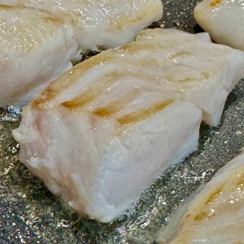

Филе трески на сковороде
«Его даже не нужно солить»

Его не нужно обваливать в муке и жарить в кляре. Его даже не нужно солить. Просто немного прогреть на растительном масле на слабом огне без крышки. Буквально три-четыре минуты.
Для этого рецепта
Филе трески
Мурманск, судовая заморозка, глазировка 0 %